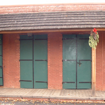
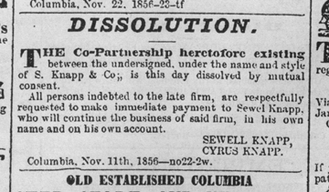
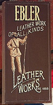
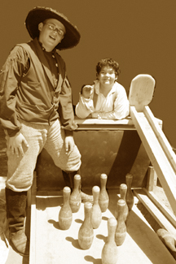

KNAPP BUILDING - MIDDLE
(AKA: Ebler's Leather Shop, Bowling Saloon Display.)
1854

© Floyd D. P. Øydegaard.
Bowling Saloon Display - 2007.
(Main Street)

1853 April - Sewell and Cyrus Knapp buy the lot.
1854 After the fire, Sewell Knapp builds a 1 story brick structure.
1854 December - Knapp sells to B. Casaretto and Co.
1856 V. Ramillo owns the building.

© Collection of web master.
Ad taken out by brothers - 1856.
1857 Thomas Besozzi buys the building.
1858 After surviving the fire, the building is purchased by M. Sharp.
1865 Sharp sells to David Parker Jr. who runs a boot and shoe shop.
1866 William Ebler rents half the building for a trunk, saddle and harness shop.
1870 Ebler buys the building.
1871 August - Ebeler. Block 9, Lot 160 - Deputy County Surveyor map by John P. Dart
1880 Mrs. Ebler takes over the business after Mr. Ebler takes to drink. She opens an Emporium of Fashion--for women. Her son by a previous marriage runs the leather shop.
1881 Mrs. Ebler moves to San Francisco and the goods are sold at auction.
1885 After Mr. Ebler's suicide, Knapp acquires the building and uses it for a storeroom, considered part of the Knapp store.
c1930s Herman Reidel has a bicycle shop. At some time Mrs. Beeheimer (sp) had ice cream parlor in building.
1947 State purchases from Belle McKenzie for $9400, several other parcels were included in the sale.
1949 Used as park headquarters.
1962 Leather shop exhibit.
1967 John and Rees White concessionaires.
1968 Vera Moore is concessionaire of Saddlery.
1969 31 March - John and Rees White concessionaires. (Park & Concessionaire report 1969-70)
1970 31 March - Vera Moore is concessionaire of Saddlery. She has a one year special use permit. (Park & Concessionaire report 1969-70)
1973 31 March - Vera Moore is granted 5 year contract for Saddle Shop. (Park & Concessionaire report 1974-75)
1977 31 May - Vera Moore is granted 5 year contract for Ebler Leather Works. (Park & Concessionaire report 1975-76)

© H. & L. Wright.
Ebler's Leather Shop - c1980.
1980 Harry and Leslie Wright take over Vera Moore's contract as concessionaires of Ebler's Leather Shop.
2001 December - Wrights don't renew contract. Cease business.
2002 March - Knapp block due for restoration.
2003 Knapp block reopened.
2007 Bowling Saloon exhibit installed. Actually a hands-on "ten-pin alley".
2 February 2020 - (NOTE from the webmaster: I love the sound of the ball rolling down the wooden planks and the crash of pins clattering and the cheers of the children when they knock most of them over. BUT there are a few street performers who don't like the interruption nor the sounds. Bags were mounted on the inside wall of the display in a futile effort to silence the sweet sounds of "Rip Van Winkle")


© Columbia State Historic Park.
Pin Boys: Christoffer Øydegaard & Nolan Morakawa(sp)- 2007.
This page is created for the benefit of the public by
Floyd D.P. Øydegaard
Email contact:
fdpoyde3 (at) yahoo (dot) com
A WORK IN PROGRESS,
created for the visitors to the Columbia State Historic park.
© Columbia State Historic Park & Floyd D. P. Øydegaard.